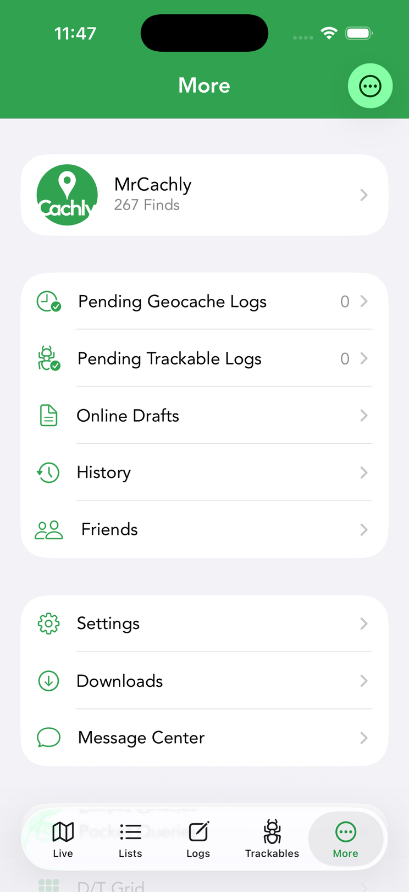
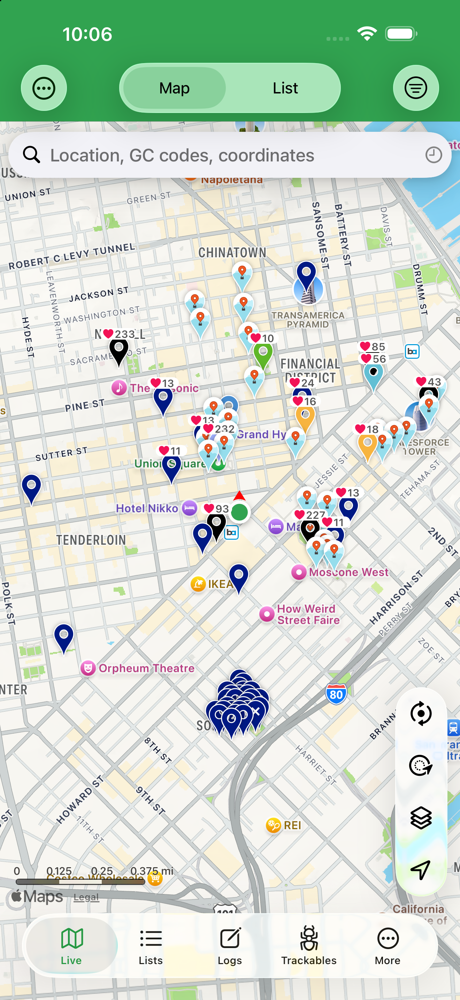

The Interface
Cachly is organized into five tabs along the bottom of the screen. Knowing what lives where makes everything else in this guide easier to follow.

The five tabs
| Tab | What you’ll find |
|---|---|
| Live | The map and list of caches around you. The hub of day-to-day caching. See The Map. |
| Lists | Your bookmark lists, custom lists and offline sets, plus search and filtering. See Lists and Search & Filters. |
| Logs | Logs you’ve written — pending uploads, drafts and history. See Logs, Drafts & History. |
| Trackables | Travel Bugs and geocoins in your inventory and that you own. See Trackables. |
| More | Your profile, settings, import/export, downloads, backups and utilities. |

Inside the More tab
The More tab is where less-frequent but powerful tools live. At the top is your profile row — tap it for your finds, hides, stats, souvenirs and favorites (Profile & Social). Below it, everything the More tab offers, grouped as it appears in the app:
| Item | What it does |
|---|---|
| Cachly Pro PRO | Subscribe to or manage Cachly Pro (shown when you’re not already subscribed). |
| Pending Geocache Logs | Finished logs saved on your device, waiting to upload. See Pending logs. |
| Pending Trackable Logs | Trackable drops and visits saved on your device to submit later. See Trackables. |
| Online Drafts | Draft logs stored on geocaching.com and synced across your devices. See Drafts. |
| History | Every cache you’ve recently viewed, most recent first. See History. |
| Friends | Your geocaching.com friends and their find counts. See Friends. |
| Settings | All of Cachly’s preferences — coordinate format, units, map options, logging, themes and more. See Settings. |
| Downloads | Manage your offline map downloads and see their progress. |
| Message Center | Opens geocaching.com’s Message Center to chat with other cachers. |
| Pocket Queries | Download and import your geocaching.com pocket queries Premium. |
| D/T Grid | Track your difficulty/terrain grid progress and find caches to fill the gaps. See D/T Grid. |
| Saved Locations | Coordinates you’ve saved — parking spots, campsites, search centers. See Saved Locations. |
| Counties / Regions PRO | County-level challenge tracking. See Counties / Regions. |
| DeLorme Grid PRO | DeLorme atlas-page challenge tracking. See DeLorme Grid. |
| Usage | Your Geocaching API usage against geocaching.com’s daily limits. |
| Import GPX | Import a GPX file into offline lists, counties or the DeLorme grid. See Import & Export. |
| Backups | Back up and restore your entire Cachly database. See Sync & Backup. |
| Help & Support | In-app help and a way to contact Cachly support. See the FAQ. |
| Review Cachly on App Store | Rate and review Cachly on the App Store. |
| Privacy | Cachly’s privacy policy. |
| Delete Geocaching Account | Start deletion of your geocaching.com account. |
| Cachly Shirts & Swag | Cachly merchandise store. |
| Tip the Developer | Leave a tip to support Cachly’s development. |
| What’s New | Release notes for recent updates. See What’s New. |
| About Cachly | Version number, credits and legal information. |
iPad
On iPad, Cachly runs full-screen with the same interface as on iPhone, giving the map, lists and cache details more room, and it works alongside other apps with iPadOS multitasking. See iPad.
Spotted a problem, or have an idea? Bug reports and feature requests are tracked on GitHub.